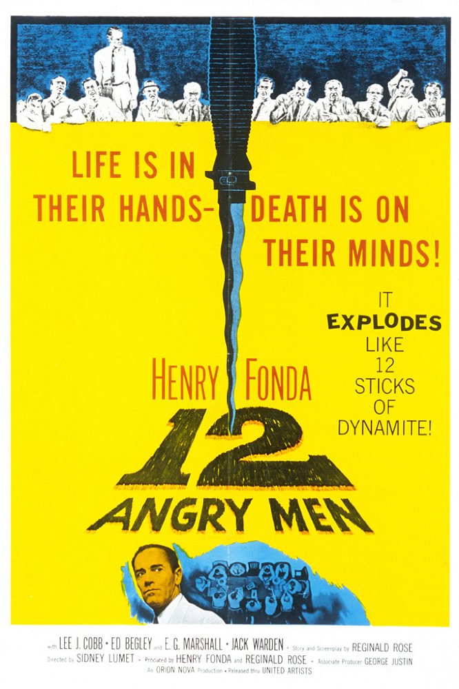

Malik Kasmi
Looking for new opportunities
I have experience in ecommerce, management consulting, and insurance
My Favorite movies
|  |
12 angry menFollowing the closing arguments in a murder trial, the 12 members of the jury must deliberate, with a guilty verdict meaning death for the accused, an inner-city teen. As the dozen men try to reach a unanimous decision while sequestered in a room, one juror (Henry Fonda) casts considerable doubt on elements of the case. Personal issues soon rise to the surface, and conflict threatens to derail the delicate process that will decide one boy's fate. |

|
Forrest GumpSlow-witted Forrest Gump (Tom Hanks) has never thought of himself as disadvantaged, and thanks to his supportive mother (Sally Field), he leads anything but a restricted life. Whether dominating on the gridiron as a college football star, fighting in Vietnam or captaining a shrimp boat, Forrest inspires people with his childlike optimism. But one person Forrest cares about most may be the most difficult to save -- his childhood love, the sweet but troubled Jenny (Robin Wright). |

|
Slumdog MillionaireAs 18-year-old Jamal Malik (Dev Patel) answers questions on the Indian version of "Who Wants to Be a Millionaire," flashbacks show how he got there. Part of a stable of young thieves after their mother dies, Jamal and his brother, Salim, survive on the streets of Mumbai. Salim finds the life of crime agreeable, but Jamal scrapes by with small jobs until landing a spot on the game show. |